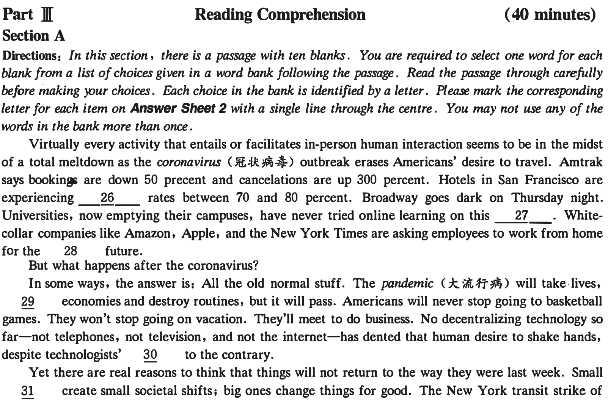
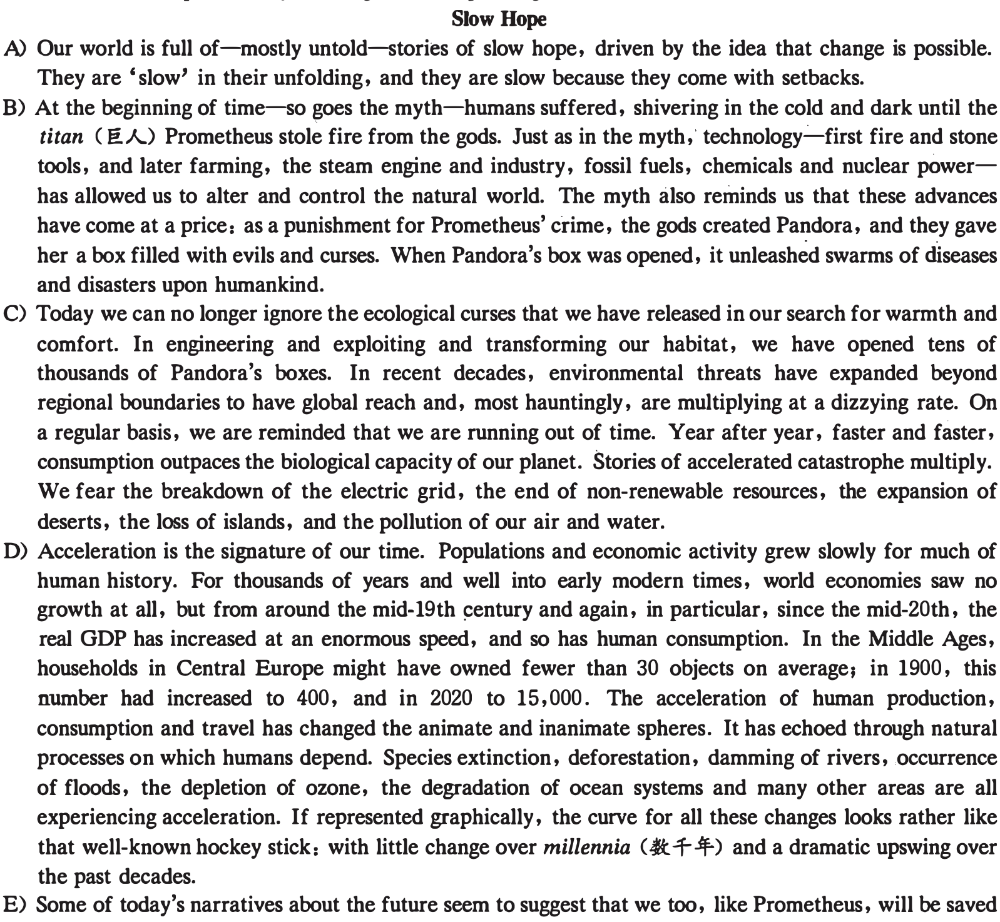
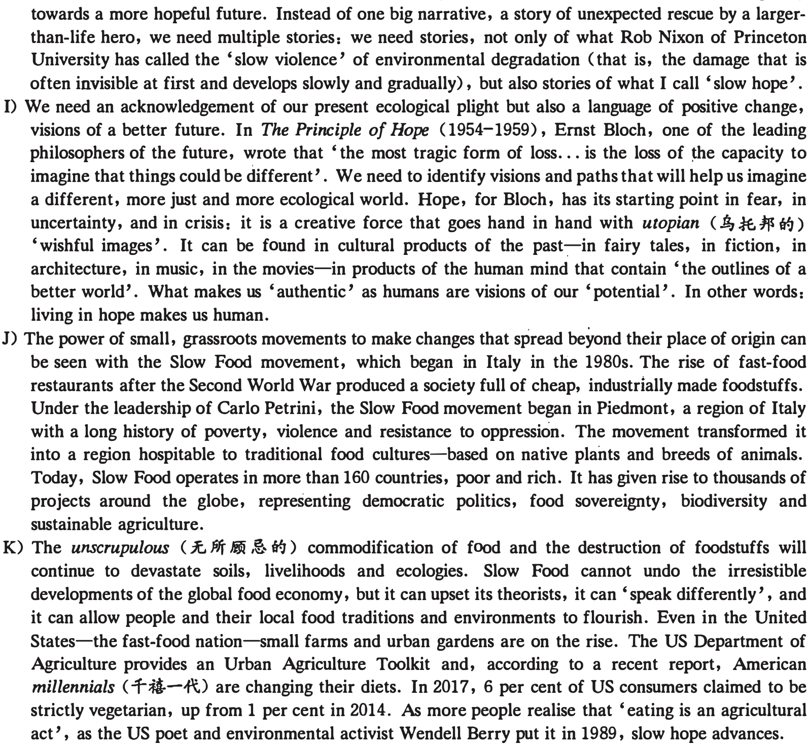
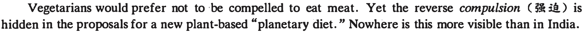
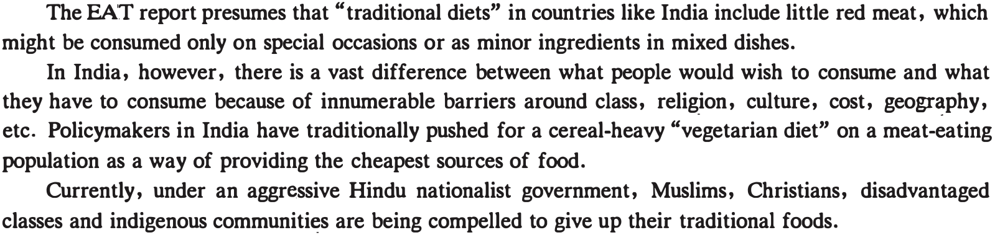

本页部分文字层异常，已保留原图文字区域；这些区域随窗口缩放，暂不能重新换行或复制。
2020年12月大学英语六级考试真题 (二)
Part I Writing (30 minutes)
Directions: For this part, you are allowed 30 minutes to write an essa,y on why students should be encouraged to develop effective communication skills. You should write at least 150 oords but no more than 200 words '.
Part 1[ Listening Comprehension ( 30 minutes)
Section A
Directions: In ·this section, yc;u will hear two long conversations. At the end of each conversation, you will hear four questions. Both the conversation and the questions will be spoken only once. After you hear a question, you must choose the best answer from the four choices marked A), B), C) and D). Then mark the corresponding letter on Answer Sheet 1 with a single line through the centre.
Questions 1 to 4 are based on the conversation you have just heard.
2.
3.
4.

8.
Section B
Directions: In this section, you will hear two JXlSsages. At the end of each passage, you will hear three or four questions. Both the JXlSsage and the questions will be spoken only once. After you hear a question, you must choose the best answer from the four choices marked A ) , B ) , C ) and D ) . Then mark the corresponding letter on Answer Sheet 1 with a single li ne through the centre.
Questions 9 to 11 are based on the passage you have just heard.
9.
11.
Questions 12 to 15 are based on the passage you have just heard.
12.
13.
14.
15.
Section C
Directions: In this section, you will hear three recordings of lectures or talks followed by three or four questions. The recordings will be played only once. After you hear a question , you must choose the best answer frcm the four choices marked A), B), C) and D). Then mark the corresponding letter on Answer Sheet 1 with a single line through the centre.
Questions 16 to 18 are based on the recording you have just heard.
16.
17.
18.
Questions 19 to 21 are based on the recording you have just heard.
19.
. C) It continues to bum up calories to help us stay in shape.
本页部分文字层异常，已保留原图文字区域；这些区域随窗口缩放，暂不能重新换行或复制。
20.
21.
Questions 22 to 25 are based on the reconling you have just heard.
22.
23.
24.
25.

本页部分文字层异常，已保留原图文字区域；这些区域随窗口缩放，暂不能重新换行或复制。

Section B
Directions: In this section, you are going to read a passage with ten statements attached to it. F.ach statement contains information given in one of the paragraphs. Identify the paragraph from which the information is derived. You may choose a paragraph more than once. F.ach paragraph is marked with a letter. Answer the questions by marking the corresponding letter on Answer Sheet 2.

本页部分文字层异常，已保留原图文字区域；这些区域随窗口缩放，暂不能重新换行或复制。
by a new Hercules, a divine engineer, someone who will mastermind, manoeuvre and manipulate our planet. They suggest that geoengineering, cold fusion or faster-than-light spaceships might transcend once and for all the terrestrial constraints of rising temperatures, lack of energy, scarcity of food, lack of space, mountains of waste, polluted water-you name it.
F) Yet, if we envisage our salvation to come from a deus ex machina (W#-i!l.:t..#), from a divine engineer or a tech solutionist who will miraculously conjure up a new source of energy or another cure-all with revolutionary potency, we might be looking in the wrong place. The fact that we now imagine our planet as a whole does not mean that the 'rescue' of our planet will come with one big global stroke of genius and technology. It will more likely come by many small acts. Global heating and environmental degradation are not technological problems. They are highly political issues that are informed by powerful interests. Moreover, if history is a guide, then we can assume that any major transformations will once again be followed by a huge set of unintended consequences. So what do we do?
G) This much is clear: we need to find ways that help us flatten the hockey-stick curves that reflect our ever-faster pace of ecological destruction and social acceleration. If we acknowledge that human manipulation of the Earth has been a· destructive force, we can also imagine that human endeavours can help us build a less destructive world in the centuries to come. We might keep making mistakes. But we will also keep learning from our mistakes.
H) To counter the fears of disaster, we need to identify stories, visions and actions that work quietly

本页部分文字层异常，已保留原图文字区域；这些区域随窗口缩放，暂不能重新换行或复制。
36. It seems some people today dream that a cutting-edge new technology might save them from the
present ecological disaster.
37. According to one great thinker, it is most unfortunate if we lose the ability to think differently.
38. Urgent attention should be paid to the ecological problems we have created in our pursuit of a
comfortable life.
39. Even in the fast-food nation America, the number of vegetarians is on the rise.
40. The deterioration of the ecological system is accelerating because of the dramatic increase of human
production and consumption.
41. It is obvious that solutions must be found to curb the fast worsening environment and social
acceleration.
42. Many people believe changing the world is possible, though it may take time and involve setbacks.
43. It might be wrong to expect that our world would be saved at one stroke with some miraculous
technology.
44. It is human nature to cherish hopes for a better world.
45. Technology has given us humans the power to change the natural world, but we have paid a price for
the change.
Section C
Directions: There are 2 JXlSsages in this section. Each pcmage is followed by sane questions or unfinished statements. For each of them there are four choices marked A), B), C) and D). You should decide on the best choice and mark the corresponding letter on Answer Sheet 2 with a single line through the centre.
Passage One
Questions 46 to 50 are based on the following passage.

Earlier this year, the EAT-Lancet Commission released its global report on nutrition and called for a global shift to a more plant-based diet and for "substantially reducing consumption of animal source foods." In countries like India, that call could become a tool to aggravate an already tense political situation and stress already undernourished populations.

. . None of these concerns seem to have been appreciated by the EAT-Lancet Commissicm's representative, Brent Loken, who said "India has got such a great example" in sourcing protein from plants.
But how much of a model for the world is India's vegetarianism? In the Global Hunger Index 2019, the country ranks 102nd out of 117. Data from the National Family Health Survey indicate that only 10 percent of infants of 6 to 23 months are adequately fed.
Which is why calls for a plant-based diet modeled on India risk offering another whip with which to beat already vulnerable communities in developing countries.
A diet directed at the affluent West fails to recognize that in low-income countries undernourished children are known to benefit from the consumption of milk and other animal source foods, improving cognitive functions, while reducing the prevalence of nutritional deficiencies as well as mortality.
本页部分文字层异常，已保留原图文字区域；这些区域随窗口缩放，暂不能重新换行或复制。
• EAT-Lancet claimed its intention was to "spark conversations" among all Indian stakeholders. Yet vocal critics of the food processing industry and food fortification strategies have been left out of the debate; But the most conspicuous omission may well be the absence of India's farmers.
The government, however, seems to have given the report a thumbs-up. Rather than addressing chronic hunger and malnutrition through an improved access to wholesome and nutrient-dense foods, the government is opening the door for company-dependent solutions, ignoring the environmental and economic cost, which will destroy local food systems. It's a model full of danger for future generations.
46. What is more visible in India than anywhere else according to the passage?
47. What would the EAT-Lancet Commission's report do to many people in countries like India?
48. What do we learn from the passage about food consumption in India?
49. What does the passage say about a plant-based diet modeled on India?
50. How does the Indian government respond to the EAT-Lancet Commission's proposals?

is that what goes for the baby on the doorstep is true in all casess even if the other person is 100% in the wrong, there’s nothing to be gained, long-term, from using this as a justification to evade responsibility.
Should you find yourself on the receiving end of this kind of complaining, there’s an ingenious way to shut it down —which is to agree with it, ardently. Psychotherapist Lori Gottlieb describes this as “over validation”. For one thing, you’ll be spared further moaning, since the other person’s motivation was to confirm her beliefs, and now you’re confirming them. But for another, as Gottlieb notes, people confronted with over-validation often hear their complaints afresh and start arguing back. The notion that they’re utterly powerless suddenly seems unrealistic—not to mention rather annoying—so they’re prompted instead to generate ideas about how they might change things.
“And then, sometimes, something magical might happen,” Gottlieb writes. The other person “might realise she’s not as trapped as you are saying she is, or as she feels.” Which illustrates the irony of the responsibility fault fallacy: evading responsibility feels comfortable, but turns out to be a prison; whereas assuming responsibility feels unpleasant, but ends up being freeing.
51. What is characteristic of a chronic complainer, according to psychiatrist Eric Berne?
52. What does the author try to illustrate with the example of the newborn on one’s doorstep?
53. What does the author advise people to do to chronic complainers?
54. What happens when chronic complainers receive over-validation?
55. How can one stop being a chronic complainer according to the author?
Part IV Translation (30 minutes)
Directions: For this part, you are allowed 30 minutes to translate a passage from Chinese into English. You should write your answer on Answer Sheet 2.
港珠澳大桥(Hong Kong-Zhuhai-Macau Bridge)全长55公里,是我国一项不同寻常的工程壮举。大桥将三个城市连接起来,是世界上最长的跨海桥梁和隧道系统。大桥将三个城市之间的旅行时间从3小时缩短到30分钟。这座跨度巨大的钢筋混凝土大桥充分证明中国有能力建造创纪录的巨型建筑。它将助推区域一体化,促进经济增长。大桥是中国发展自己的大湾区总体规划的关键。中国希望将大湾区建成在技术创新和经济繁荣上能与旧金山、纽约和东京的湾区相媲美的地区。